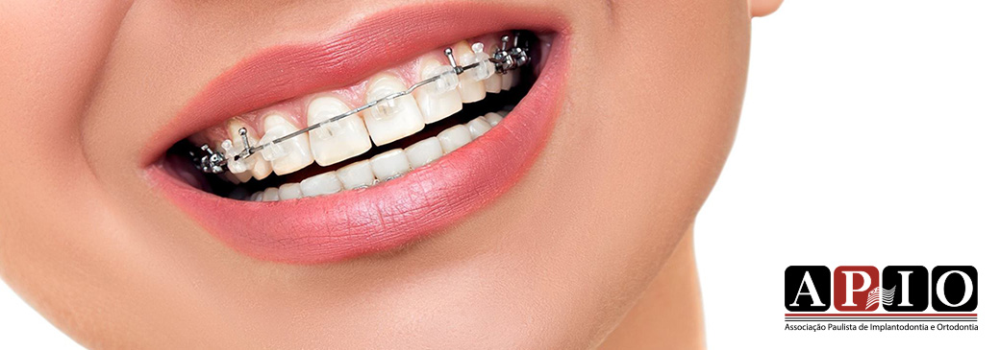
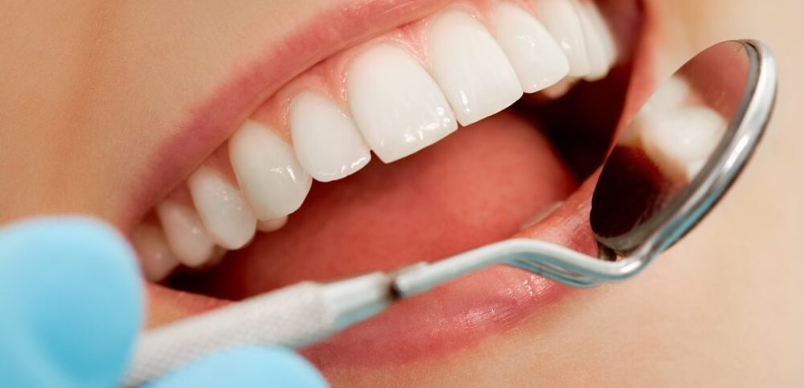

Prótese

O QUE É A PRÓTESE DENTÁRIA?
A prótese dentária é a área da medicina dentária que se ocupa da conceção, fabrico e colocação de próteses dentárias fixas ou removíveis, visando a reabilitação da função mastigatória, estética e fonética do paciente.

QUAIS SÃO OS TIPOS DE PRÓTESES DENTÁRIAS DISPONÍVEIS?
Os tipos de próteses dentárias disponíveis incluem próteses fixas (coroas e pontes) e próteses removíveis (parciais ou totais), feitas de materiais como metal, cerâmica ou resina acrílica.
QUAIS SÃO OS BENEFÍCIOS DA PRÓTESE DENTÁRIA?
- Restauração da função mastigatória e capacidade de fala
- Melhoria da estética facial e do sorriso